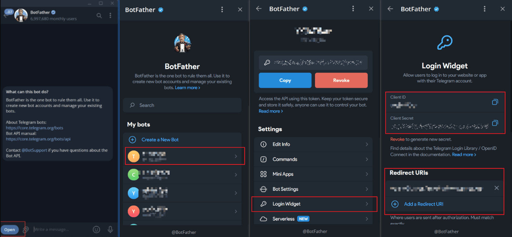

Telegram配置教程
唤醒Telegram的APP授权登录配置教程
使用TG与 @BotFather 进行对话
1、点击“OPEN”
2、选择对应的机器人 - Bot Settings （若还没有创建机器人，请参考：TG机器人配置-下方机器人配置教程）
3、点击“Switch to OpenID Connect Login”获取 Client ID 和 Client Secret 填写至上方对应输入框
4、复制上方 Redirect URIs 中选择的后端加速域名链接，填写至Bot Settings配置项“Redirect URIs”中保存即可
注意：Bot Settings配置项Redirect URIs和上方Redirect URIs 中选择的后端加速域名必须一致
